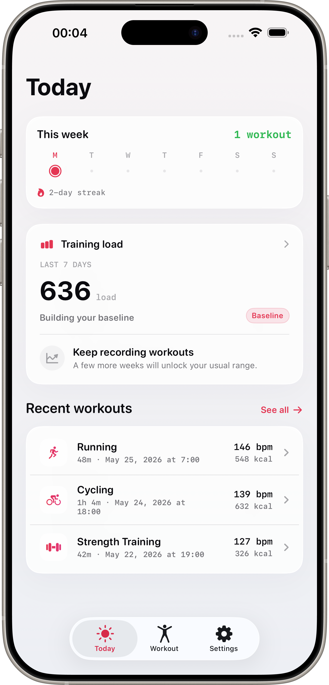
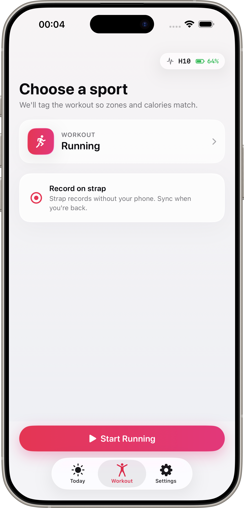
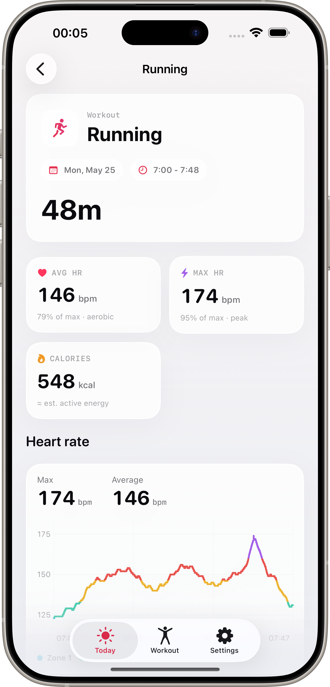

Start the strap recording
Begin a session from the app, then let the H10 carry the workout while you move.
Built for Polar H10 and Apple Health
Start a workout on your chest strap, train freely, then import the session to your iPhone with heart-rate zones, recovery trends, and Health sync ready to go.


Pulse Sense keeps the workflow simple: connect the H10, start the recording, import when you are done, and keep the useful signals visible without turning training into admin work.
Begin a session from the app, then let the H10 carry the workout while you move.
Bring the session back to your iPhone with duration, zones, calories, and heart-rate samples.
Use training load, recovery trend, streaks, and history to see how sessions are stacking up.

Pulse Sense is designed around local workout storage, private iCloud backup, and explicit Apple Health permission. Bluetooth is used for your H10 connection, not for tracking you.
Use Pulse Sense when you want chest-strap data, clean workout history, private iCloud backup, and Apple Health sync without a fitness account.